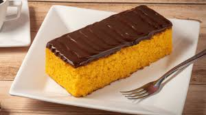

Bolo de Cenoura 🍰
Massa
- 1/2 xícara (chá) de óleo
- 2 xícara (chá) de cenoura picada
- 4 ovos
- 2 xícaras (chá) de açúcar
- 2 xícaras (chá) de farinha de trigo
- 1 colher (café) de fermento em pó
Cobertura
- 1 lata de leite condensado
- 1 caixinha de creme de leite
- 1 colher cheia de margarina
- 3 colheres cheias de chocolate em pó
Modo de preparo
- Separe as claras das gemas.
- Bata as claras em neve e reserve.
- No liquidificador coloque a cenoura, o óleo e as gemas e bata por 5 minutos.
- Em uma tigela misture a farinha de trigo, o fermento e o açúcar, misture bem.
- Depois junte os ingredientes batidos, misture bem, por último junte as claras em neve.
- Em uma assadeira untada leve para assar em forno médio, pré-aquecido, por aproximadamente
40 minutos, ou até que fure com um palito e ele saia limpo.